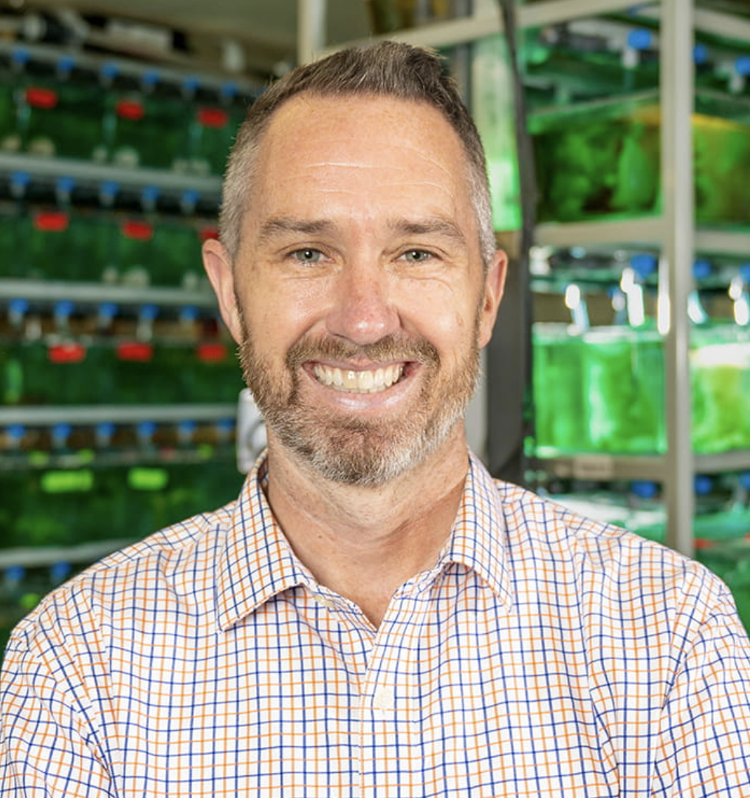

Dr. Kenny Q. Zhu is a full professor of computer science at University of Texas at Arlington. He graduated with B.Eng (Hons) in Electrical Engineering in 1999 and PhD in Computer Science in 2005 from National University of Singapore. He was a postdoctoral researcher and lecturer from 2007 to 2009 at Princeton University. Prior to that, he was a software design engineer at Microsoft, Redmond, WA. From Feb 2010 to Aug 2010, he was a visiting professor at Microsoft Research Asia in Beijing. From 2010 to 2023, he was an associate professor and then full professor at Shanghai Jiao Tong University. Kenny's main research interests are natural language processing and knowledge engineering. He has published extensively in AI, NLP, and Database at top venues such as AAAI, IJCAI, ACL, EMNLP, WWW, SIGMOD, and CIKM. He has served as the SPC or PC of AAAI, IJCAI, ACL, EMNLP, NAACL, WWW, CIKM, ECML, etc. His research has been supported by NSF China, MOE China, Microsoft, Google, Oracle, Morgan Stanley and AstraZeneca. Kenny is the winner of the 2013 Google Faculty Research Award and 2014 DASFAA Best Paper Award.
Research Experience for Undergraduates Site
Arlington Computational Linguistics Group (ACLGroup-REU)
REU Site Faculty Mentors

Matthew R. Walsh
Dr.Walsh is a Professor in the Biology Department at UTA. He earned his PhD in Evolution, Ecology & Organismal Biology from University of California Riverside. Before joining UTA in the Fall of 2012, he was an Environmental Research Fellow at Yale University. He has been awarded with Presidents Award for Excellence in Teaching at UTA in May 2021 and College of Science Teaching Excellence Award at UTA in May 2020.